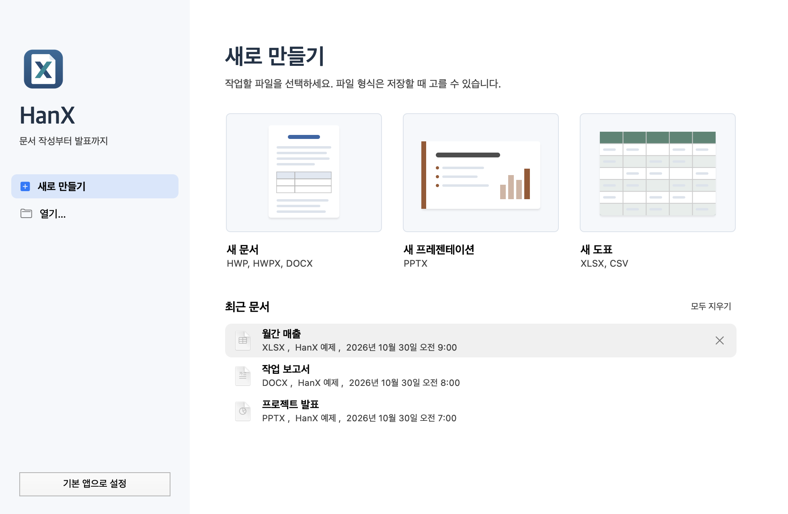
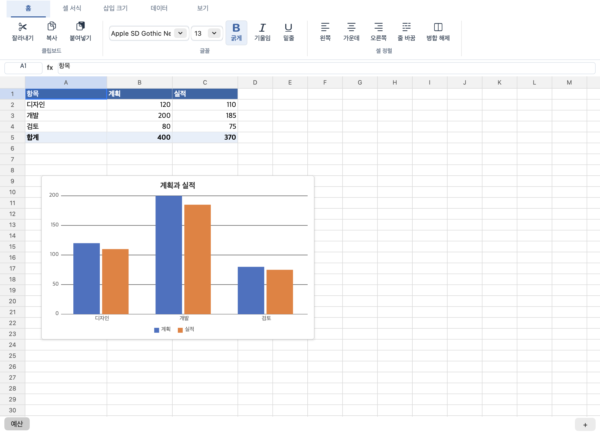
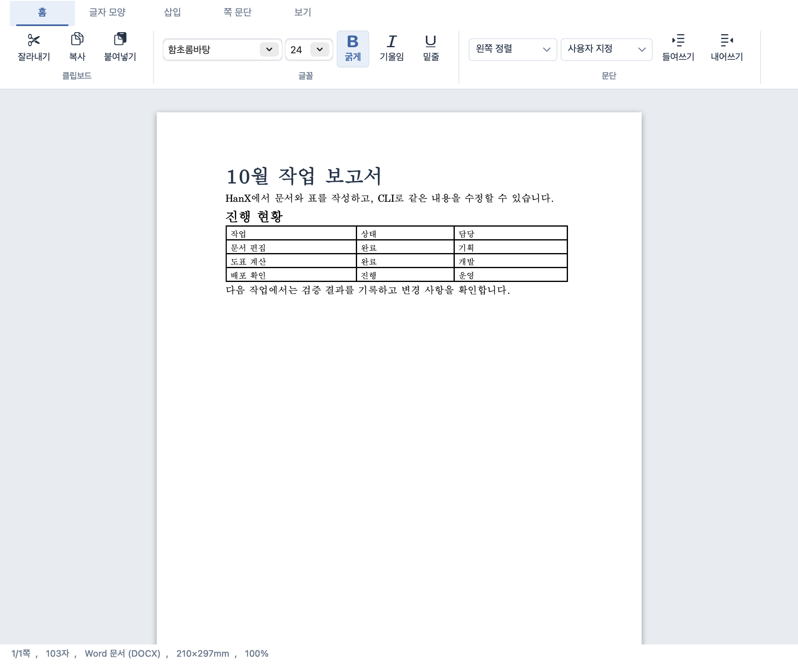
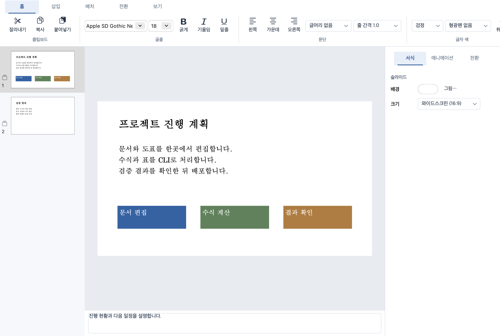

필요한 범위 읽기
A1:D5처럼 범위를 지정합니다. 셀 주소, 입력한 수식, 계산값, 표시 문자열과 서식을 JSON으로 받습니다.
spreadsheet read --range A1:D5macOS 13 이상 Apple Silicon / Intel
로컬 에이전트가 HanX CLI를 호출해 셀과 범위를 읽고, 수식을 계산하고, 수정한 파일을 저장합니다. XLSX부터 HWP와 DOCX까지 같은 도구로 다룹니다.
HanX에는 언어 모델이 포함되어 있지 않습니다.
사용 중인 로컬 AI 에이전트가 CLI 또는 MCP로 도구를 호출합니다.
# 매출 시트의 셀과 계산값 읽기
$ hanx spreadsheet read 매출.xlsx \
--sheet 매출 --range A1:D5 --pretty# 파일을 수정하지 않고 수식 계산
$ hanx spreadsheet eval 매출.xlsx \
--sheet 매출 \
--formula '=SUM(D2:D4)' --pretty설치 후 hanx capabilities --pretty로 지원 범위를 확인하세요. 에이전트에도 먼저 capabilities와 CLI 안내를 읽도록 요청하면 됩니다.
네이티브 실행 파일은 Mac에서 동작합니다. 앱과 CLI의 설치 경로는 배포 방식에 따라 다릅니다.
npm 배포 정보 확인 중
공개 패키지가 확인되면 설치 명령을 제공합니다.
Homebrew 배포 정보 확인 중
공개 formula가 확인되면 설치 명령을 제공합니다.
엑셀 작업에 필요한 단위를 명령으로 노출합니다. Excel 앱을 실행하지 않고 HanX 계산 엔진이 수식을 평가합니다.
A1:D5처럼 범위를 지정합니다. 셀 주소, 입력한 수식, 계산값, 표시 문자열과 서식을 JSON으로 받습니다.
spreadsheet read --range A1:D5JSON 작업으로 값을 바꾸거나 범위에 수식을 채웁니다. 상대 참조와 $A$1 같은 절대 참조를 구분합니다.
set_cell / set_range / fill_formula출력 경로를 지정해 저장하고 결과를 다시 읽습니다. 재계산 결과와 formulaErrors에서 수식 오류를 확인합니다.
spreadsheet recalculate --output합계, 조건, 조건별 집계와 조회를 지원합니다. 함수별 동작과 제한은 spreadsheet functions에서 확인하세요.
=SUM(D2:D10)=IF(D2>=100000,"달성","진행")=SUMIFS(D2:D10,A2:A10,"서울")=XLOOKUP(F2,A2:A10,D2:D10)도구 사용과 저장할 결과를 함께 지정하면 작업 범위가 명확해집니다.
HanX capabilities와 CLI 안내를 읽어 줘. 매출.xlsx의 매출 시트에서 A1:D10을 확인하고, D11에 SUM 합계를 넣어 매출-수정.xlsx로 저장해 줘. 저장한 파일을 다시 읽어 수식과 계산값을 확인해 줘.
셸을 실행할 수 있는 에이전트는 CLI를 호출하고 JSON 응답을 읽습니다. MCP를 지원하는 클라이언트는 stdio 서버에 연결해 같은 읽기와 편집 기능을 도구로 호출할 수 있습니다.
입력 명세와 수정 작업은 JSON 파일 또는 표준 입력으로 전달합니다. 기존 출력 파일은 기본적으로 덮어쓰지 않습니다.
CLI와 MCP 연결 방법[
{
"op": "fill_formula",
"sheet": "매출",
"range": "D2:D10",
"formula": "=B2*C2"
}
]hanx edit 매출.xlsx --ops 작업.json --output 매출-수정.xlsx
HanX는 문서, 도표, 프레젠테이션을 여는 macOS 네이티브 앱입니다. CLI로 만든 파일도 앱에서 열어 내용을 확인하고 편집할 수 있습니다.


XLSX, CSV, TSV의 셀과 수식을 편집합니다. 셀 서식, 시트, 병합과 기본 차트를 다룹니다.

HWP, HWPX, DOCX를 읽고 편집합니다. 본문, 표, 그림과 문단 서식을 다룹니다.

PPTX의 슬라이드를 편집합니다. 텍스트와 도형, 표, 그림을 배치하고 발표 화면으로 확인합니다.
지원 형식을 읽을 수 있어도 모든 개체와 동작을 재현하는 것은 아닙니다. 복잡한 원본은 복사본으로 작업하고 저장 결과를 확인하세요.
XLSX, CSV, TSV를 지원하며 구형 XLS 바이너리 파일은 지원하지 않습니다. 조건부 서식, 피벗, 필터와 일부 개체는 지원하지 않아 모델을 거쳐 저장하면 빠질 수 있습니다. 모든 함수가 Microsoft Excel과 동일하게 동작하는 것은 아닙니다.
매크로와 외부 링크는 실행하지 않습니다. 미지원 요소를 보존해야 하는 OOXML 파일은 CLI 안내의 package patch 방식을 검토하세요. 암호화 문서와 일부 복잡한 문서 개체에도 제한이 있습니다.
HanX는 외부 AI 서비스에 자동으로 연결하지 않습니다. 에이전트의 파일 접근 권한과 실행 환경은 사용 중인 클라이언트에서 설정합니다. MCP를 쓸 때는 설치 안내에 나온 실행 파일의 절대 경로를 지정하세요.
본 제품은 한컴의 HWP 문서 파일(.hwp) 공개 문서를 참고하여 개발하였습니다.
한글과컴퓨터 또는 Microsoft의 공식 제품이 아닙니다.